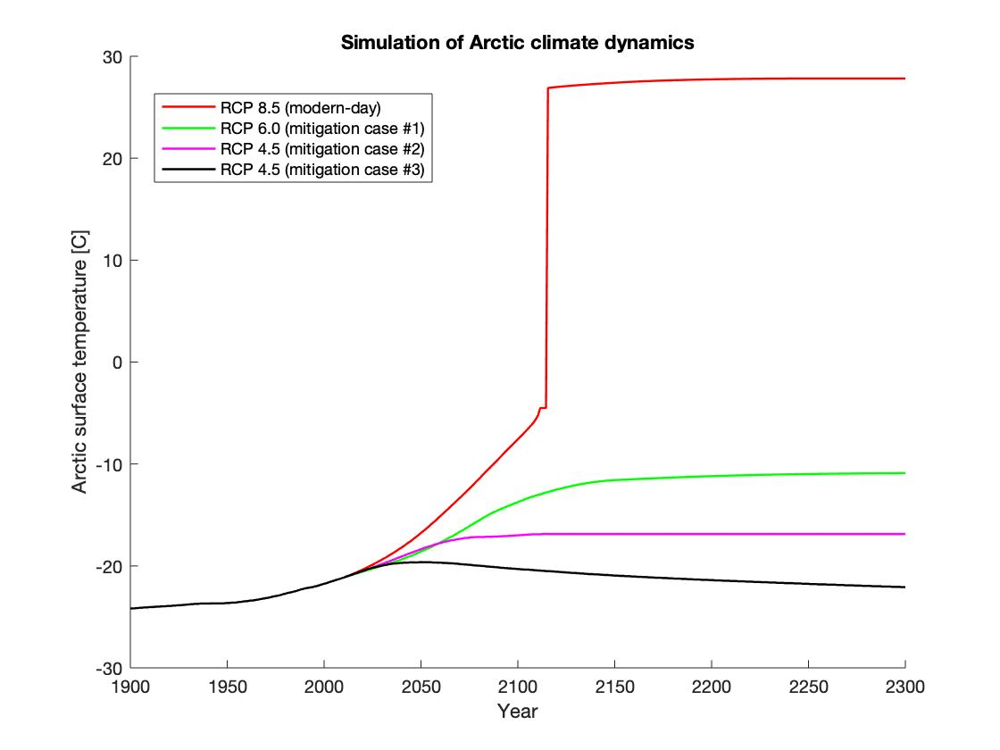
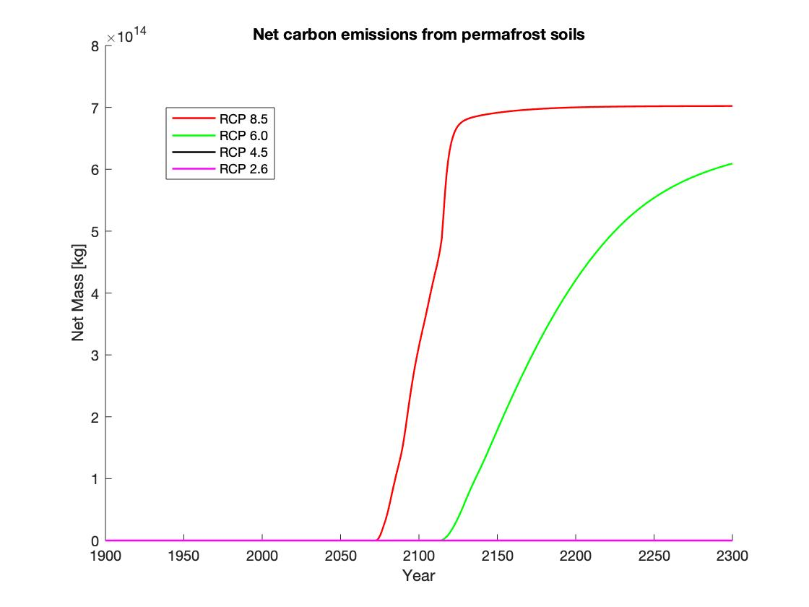
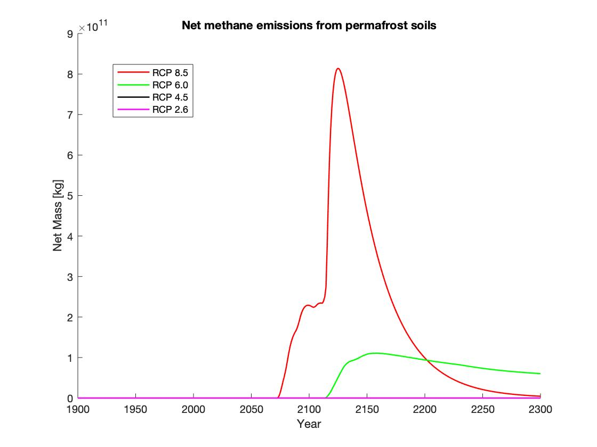
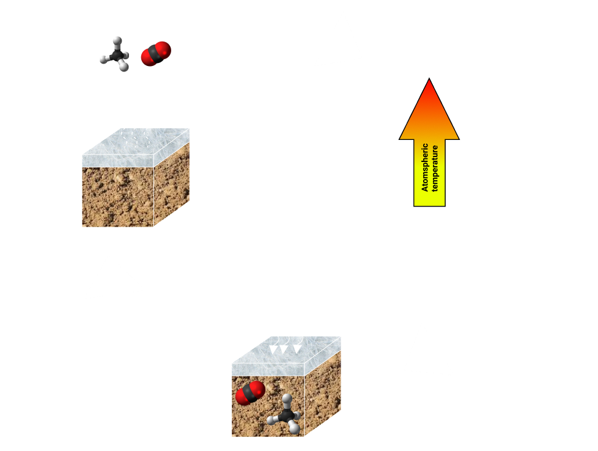
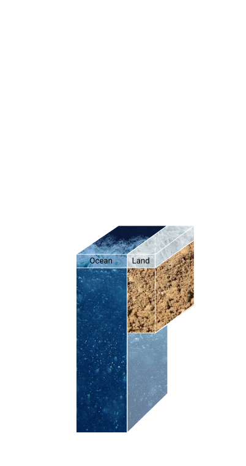

Working with the Department of Mathematics and Statistics at the University of Guelph, this project set out to implement permafrost feedback in an Energy Balance Model (EBM) for the Arctic. Here, permafrost feedback refers to a positive feedback process in which rising Arctic temperatures increase the rate of green house gas (GHG) emissions from permafrost soils, which in turn increase Arctic temperatures.
At the heart of the dynamcis is a 1-dimensional application of the heat equation to model heat conduction within the permafrost. The net land-atmosphere heat flux calculated in the main energy balance prescribed the first boundary conditition, while the assumption of a constant reference temperature at the bottom of the surface slab as comprised the second. In order to model the temperature-dependence of microbial decomposition rates in the soil, a Q10 sensitivity is used. We use this in tandem with the most recent scientific estimates for total permafrost carbon and its distribution between pool types to paint a realistic image of heterotrophic respiration in Arctic soils.
Once the dynamics were formulated on paper, a numerical model was compiled in MATLAB to run simulations. The model tracks the evolution of carbon stocks in permafrost soils over the range of years from 1900 to 2300 and predicts Arctic surface temperatures in each year. Previous applications of the EBM reported a bifurcation (think "big jump") in the transition of Arctic surface temperatures in one scenario and it was of primary interest to see how the inclusion of a positive feedback process affected the timing of this event.
Upon simulation, it was found that permafrost feedback advanced the onset of the bifurcation by 5 years. At the point of bifurcation (year 2115), 6.7% of the total estimated carbon stocks have been released and by 2300 this figure has jumped to 17.5%. The net CO2 emissions from permafrost soils in this modern-day testing scenario amounted to 74 billion metric tonnes and increased global levels by 53.3 ppm. Current global CO2 levels are ~410 ppm.